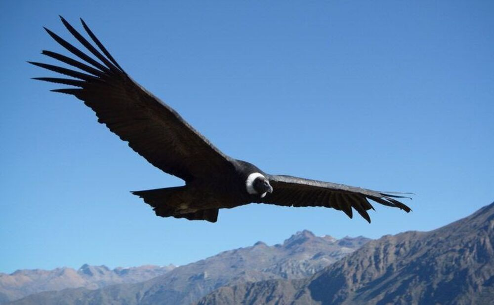

Presentation
At a time when different animal species gain ground due to the health emergency and social, preventive and compulsory isolation, and therefore contact between humans and wild animals will become more common once society returns to its normal routine. For this reason, this page aims to develop protection strategies based on raising awareness about the importance of some species in our province. This information will then be used as an indicator of environmental quality management.
For this purpose, we will seek to create a reliable source of information which allows the user to learn about the local fauna, in this way he will know what he is facing and how to proceed to avoid any conflict that may cause a danger to himself as well as to the animal. in question.
On this page you can also find information about associations and NGOs related to wildlife, which not only can provide more information, but can also provide support in extreme cases in which specialized help is needed to deal with wildlife.